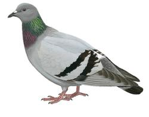

4000 BC
The rock pigeon Columba livia was the wild ancestor of the feral pigeon and the first bird to be domesticated, in the Middle East some 6,000 years ago. It might seem improbable that the rock pigeon, a relatively uncommon species of remote cliffs, was the first bird we domesticated. But this process did not involve capture and selective breeding – merely the provision of an alternative place to nest, usually a dovecote with rows of ledges or clay pots along its internal walls. Some designs could accommodate several thousand sitting females. The pigeons themselves were given little food, generally flying off to forage elsewhere. Despite requiring minimal attention, each pair typically produced about 10 squabs a year. Pigeons were thus the perfect source of protein. The word ‘pigeon’ is derived from the Latin word ‘pipio’, meaning ‘young cheeping bird’.
6000BC
Some text
a pic